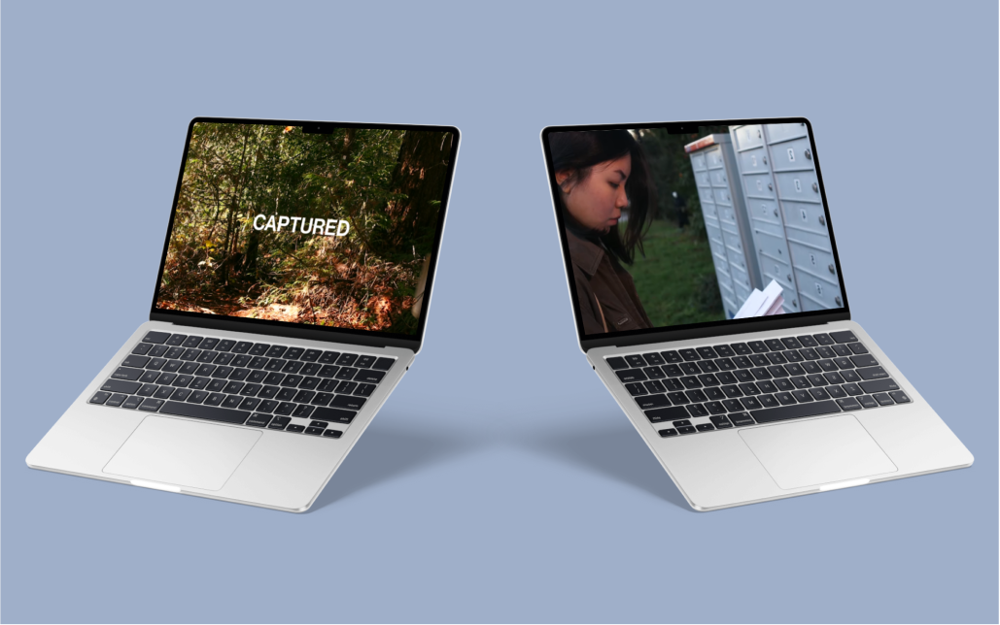

Final Team Assignment at SFU

As our final film project my group and I were tasked with creating a short film with an intriguing and compelling narrative. The goal of this project was to demonstrate our creativity and technical skills we learned during the course. Our film was chosen as one of the Top 10 final films, shown at our film showcase at the end of the term, and was awarded Best Sound.
When a curious and reckless photographer goes to explore a secluded forest, she accidentally discovers a mysterious cult preparing for an unsettling ritual. Determined to capture their existence, she equips her camera and relentlessly chases after them.
Sound Recording, Script Writing, Storyboarding, Casting
Adobe Premiere Pro, Figma
Final Film